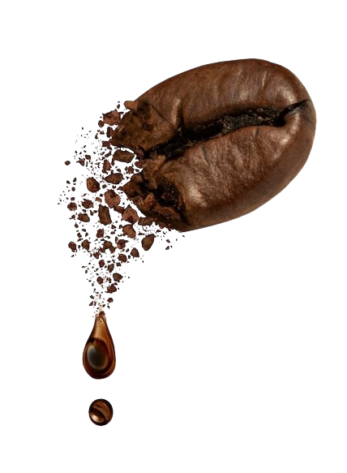

Menu Kami

Matcha
Selamat datang dalam dunia Matcha, di mana kelezatan dan kesehatan bersatu. Nikmati rasa unik yang menyeluruh, didukung oleh tingginya antioksidan untuk kesejahteraan. Dapatkan energi lembut tanpa lonjakan dari kafein, dan temukan kedamaian dalam setiap tegukan. Matcha bukan hanya minuman, tapi pengalaman yang membangkitkan.

Kopi
Jelajahi dunia rasa dalam setiap tegukan kopi kami. Dipersembahkan dengan cinta, kopi kami menghadirkan pengalaman yang tak terlupakan. Nikmati kehangatan yang memeluk jiwa dan aroma yang membangkitkan semangat. Selain memberikan kenikmatan bagi lidah, kopi juga menjadi sahabat setia dalam rutinitas sehari-hari. Kafein dalam kopi membantu memulai pagi dengan energi, meningkatkan konsentrasi, dan menghidupkan semangat. Sajikan diri Anda dengan secangkir kopi, dan temukan betapa sebuah minuman dapat memberikan begitu banyak pada hidup Anda.

Teh
Teh, kisah rasa yang melewati waktu. Dari daun pilihan, hadir kelezatan dan manfaat. Nikmati momen tenang dengan setiap cangkir, sambil merawat tubuh dengan antioksidan alami. Teh adalah teman setia di pagi yang cerah atau sore yang sejuk.